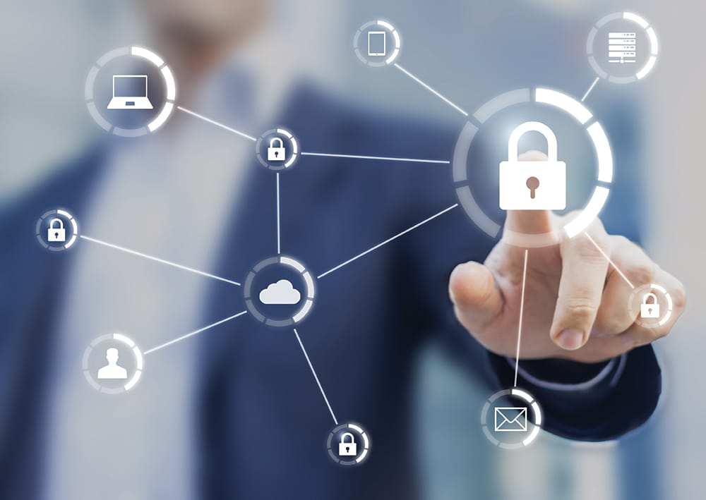

Поради для безпеки в Інтернеті

Інтернет - це чудовий інструмент, який дозволяє нам швидко та легко отримувати доступ до інформації, спілкуватися з друзями та родичами, здійснювати покупки та багато іншого. Однак, з кожним роком кількість кіберзагроз зростає, тому важливо вміти захистити свої дані та особисту інформацію. Нижче наведені поради для безпеки в Інтернеті:
1. Використовуйте складні та унікальні паролі для кожного облікового запису та регулярно змінюйте їх. Не використовуйте один і той же пароль для кількох облікових записів.
2. Установлюйте програмне забезпечення для захисту від вірусів, шпигунського програмного забезпечення та інших кіберзагроз.
3. Перевіряйте адресу веб-сайту перед введенням особистої інформації чи здійсненням покупки. Впевніться, що адреса починається з "https", що означає, що сайт захищений протоколом SSL.
4. Не відповідайте на небажану електронну пошту, особливо якщо вона містить прохання про введення особистої інформації.
5. Використовуйте VPN-сервіс для захисту від несанкціонованого доступу до даних під час використання Інтернету.
6. Обмежуйте права доступу до комп'ютера та інших гаджетів, особливо у випадку спільного використання з іншими користувачами.
7. Установлюйте програмне забезпечення для захисту від рекламних програм (adware) та небажаних вікон (pop-ups).
8. Обережно встановлюйте програмне забезпечення, перевіряйте джерело та авторизацію програм перед їх встановленням.
9. Уважно ставтеся до безпеки мереж Wi-Fi, особливо у випадку використання публічних мереж.
10. Постійно навчайтеся та оновлюйте свої знання про нові види кіберзагроз та методи їх запобігання.
11. Не діліться своїми особистими даними, такими як номери кредитних карток, паролі або номери соціального страхування, з незнайомими людьми в Інтернеті.
12. Використовуйте двофакторну аутентифікацію для важливих облікових записів, щоб забезпечити додатковий рівень захисту.
13. Регулярно робіть резервні копії важливої інформації на зовнішній носій, щоб уникнути втрати даних у разі атаки.
14. Не відкривайте посилання в електронних листах від незнайомих осіб або на підозрілі сайти.
15. Будьте обережні при завантаженні файлів з Інтернету, особливо з торрент-сайтів та інших незнайомих джерел.
16. Переконайтеся, що ваша операційна система та програмне забезпечення оновлюються регулярно, щоб забезпечити захист від відомих кіберзагроз.
17. Не використовуйте комп'ютери або гаджети в інтернет-кафе або інших громадських місцях для доступу до важливої особистої інформації.
18. Не дозволяйте програмам автоматично зберігати ваші паролі та іншу особисту інформацію.
19. У разі підозри на кібератаку, негайно зверніться до спеціалістів з кібербезпеки або до служби підтримки відповідного сервісу.
20. Навчайте своїх дітей правилам безпеки в Інтернеті та контролюйте їхню активність в мережі.
Отже, забезпечення кібербезпеки - це надзвичайно важлива справа, яка стає все більш актуальною в нашому світі, де ми все більше залежимо від технологій. Щоб захистити свої особисті дані та уникнути кіберзагроз, необхідно дотримуватися правил безпеки в Інтернеті, які ми розглянули у цій статті. Також важливо навчати ці правила своїх дітей та бути завжди обережними та пильними під час користування Інтернетом. Захист вашої кібербезпеки - це ваша відповідальність, тому не забувайте про це і дотримуйтесь правил безпеки в Інтернеті.